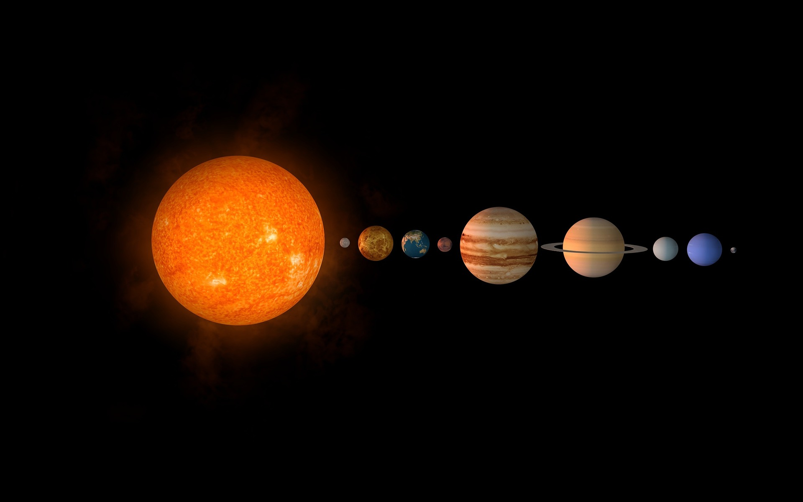

NASTANAK
Sunčev sustav počeo je nastajati prije približno 4,6 milijardi godina
iz velikog oblaka dima i prašine koji se počeo pretvarati u proroplanetarni

disk s užarenim središtem. Što je disk bio spljošteniji to se brže okretao
te su nastajali prstenovi. U prstenovima su se nakupljale razne metalne i
stjenovite čestice od čijih su se nakupina počela stvarati prva tijela
Sunčeva sustava. Dok su polako gomilanjem čestica počeli nastajati prvi
planeti, u sredini užarenog diska formiralo se Sunce,koje i dan danas
izgara na iznimnom visokim temperaturama.Planeti koji su udaljeni od
Sunca brže su se hladili, dok su se planeti bliže Suncu sporije hladili
i postajali pogodniji za razvoj živućih organizama.
SASTAV
Prema današnjim saznanjima, Sunčev sustav sadrži, osim Sunca, osam planeta,
pet patuljastih planeta, više od 170 njihovih prirodnih satelita te mnoštvo
manjih tijela kao što su kometi, planetoidi, kentauri, objekata Kuiperova pojasa,
meteroida i međuplanetarne tvari.Sunčeva plazma ispunjava heliosferu,
a Sunčev vjetar širi se u svim smjerovima Sunčeva sustava.
PLANETI
Planeti Sunčevog sustava razvrstani su u dvije skupine, skupinu unutarnjih ili terestričkih planeta i skupine vanjskih ili jovijalskih planeta.
Planeti unutarnje skupine su:
Zemlja,Merkur ,Venera i Mars. Za njih je karakteristična stjenovita površina i tanak atmosferski sloj.
Planeti vanjske skupine su: Jupiter , Saturn, Uran i Neptun. Vanjski planeti imaju malu stjenovitu jezgru i svojom građom podsjećaju na
sastav građe nekog protoplanetnog planeta.
| IME PLANETA | NAJEĆI PROMJER | PERIOD REVOLUCIJE | SREDNJA UDALJENOST OD SUNCA | TEMPERATURA NA POVRŠINI | SATELITI |
| Merkur | 4920 km | 87,9 dana | 56,9 mil. km | -170 do 430 ˙C | / |
| Venera | 12 100 km | 224.7 dana | 108,2 mil. km | 480 ˙C | / |
| Zemlja | 12 756 km | 365,26 dana | 149,6 mil. km | 15 ˙C | Mjesec |
| Mars | 6800 km | 686 dana | 227,9 mil. km | -140 do 20 ˙C | Fobos i Demos |
| Jupiter | 142 700 km | 4333 dana | 778,3 mil. km | -120 do -160 ˙C | 79 satelita |
| Saturn | 120 800 km | 10 759 dana | 1428 mil. km | -130-160 ˙C | 82 satelita |
| Uran | 52 900 km | 30 685 dana | 2872 mil. km | -210 ˙C | 27 satelita |
| Neptun | 44 600 km | 60 189 dana | 4498 mil. km | -110 do -220 ˙C | 14 satelita |